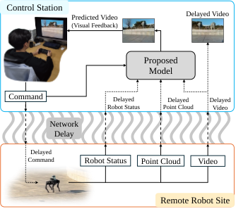
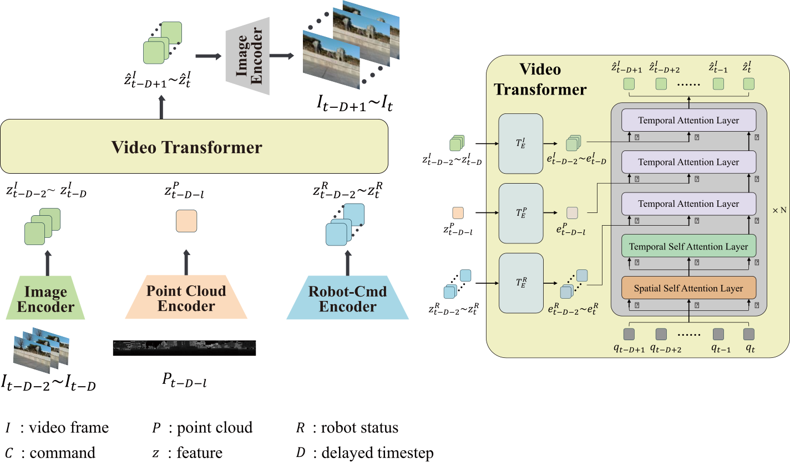
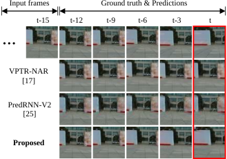
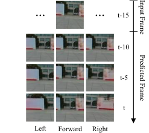
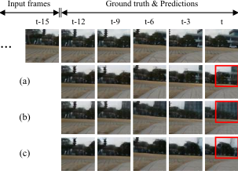
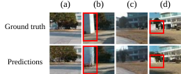

Teleoperation systems are utilized in various controllable systems, including vehicles, manipulators, and quadruped robots. However, during teleoperation, communication delays can cause users to receive delayed feedback, which reduces controllability and increases the risk faced by the remote robot.
To address this issue, we propose a delay-free video generation model based on user commands that allows users to receive real-time feedback despite communication delays. Our model predicts delay-free video by integrating delayed data (video, point cloud, and robot status) from the robot with the user's real-time commands. The LiDAR point cloud data, which is part of the delayed data, is used to predict the contents of areas outside the camera frame during robot rotation. We constructed our proposed model by modifying the transformer-based video prediction model VPTR-NAR to effectively integrate these data.
For our experiments, we acquired a navigation dataset from a quadruped robot, and this dataset was used to train and test our proposed model. We evaluated the model's performance by comparing it with existing video prediction models and conducting an ablation study to verify the effectiveness of its utilization of command and point cloud data.

The proposed model predicts delay-free visual feedback on user commands by integrating delayed data (video, point cloud, robot status) transmitted from the remote robot with the user’s real-time commands.
With the proposed model, delay-free visual feedback to user commands can be predicted in a quadruped robot teleoperation system with communication delays.
The network is primarily composed of three encoders — an image encoder, a point cloud encdoer, and a robot-command encoder — followed by a video transformer.

Comparison of Qualitative result with other baselines. This result is in the form of a prediction for a scenario where the robot turns left after moving straight forward.

Table: comparison with other models


Qualitative result of varied scenarios. (a) and (b) represent the same location, as do (c) and (d). While each pair depicts the same location, the model successfully generated the newly introduced structures when they were present.

@article{10857415,
author={Ha, Seunghyeon and Kim, Seongyong and Lim, Soo-Chul},
journal={IEEE Robotics and Automation Letters},
title={Prediction of Delay-Free Scene for Quadruped Robot Teleoperation: Integrating Delayed Data With User Commands},
year={2025},
volume={10},
number={3},
pages={2846-2853},
keywords={Robots;Predictive models;Quadrupedal robots;Streaming media;Delays;Data models;Point cloud compression;Transformers;Feature extraction;Visualization;Deep learning methods;telerobotics and teleoperation;visual learning},
doi={10.1109/LRA.2025.3536222}}
}